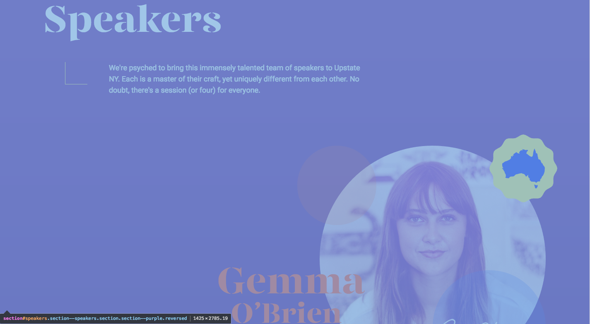
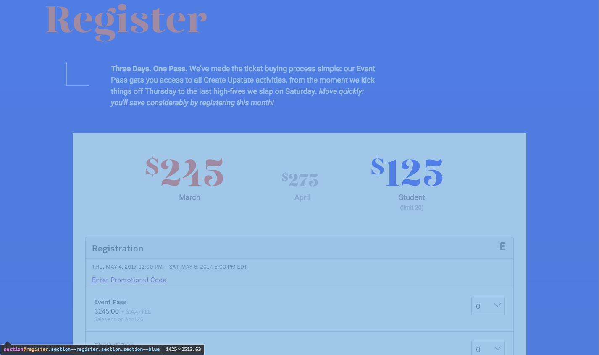
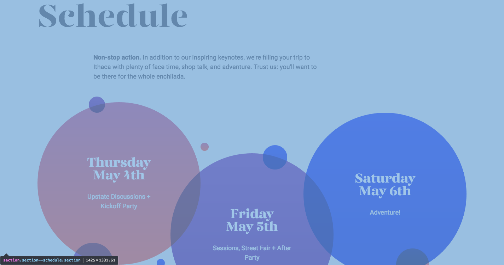

Create Upstate Anlysis
- The navigation is laid out across the top of the screen with buttons.
- The four sections are location, speakers, register, and schedule.



- The sections are separated visually by a color difference across the screen with a wavy line.
- The article is used to group everything related to that speaker together seperately.
- It is laid out like the navigation at the top of the page with links to blogs and such. They also have social media links.
- The difference is the nav primary and the nav secondary. The other difference is where the content links you to.